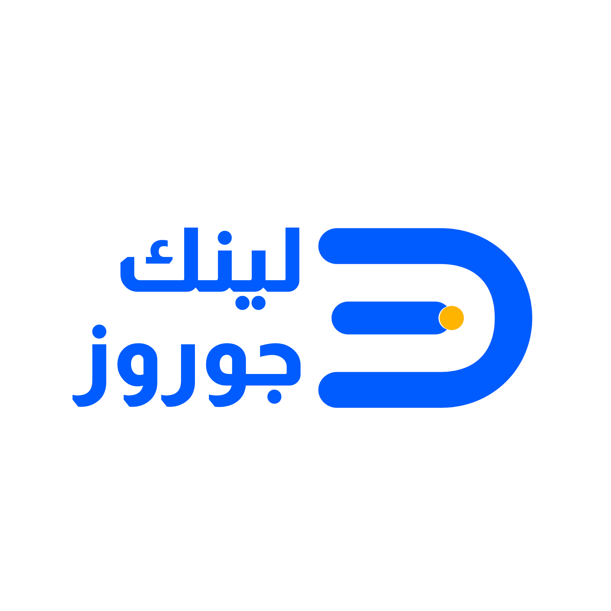

الخيار أ
اسم البديل
ما الذي سيتغير؟
ما قيده الأكبر؟

اجمع الخلاف في ورقة واحدة؛ اخرج بقرار واضح، واعرف متى يثبت ومتى يعود إلى المجلس.
اكتب وقائع قصيرة. افصل الدليل عن الافتراض. لا تختَر قبل أن يظهر البديل الجاهز وشرط الانتقال إليه.
| معيار الاختيار | أ | ب | ج | كما نحن |
|---|---|---|---|---|
| 1. | ○ | ○ | ○ | ○ |
| 2. | ○ | ○ | ○ | ○ |
| 3. | ○ | ○ | ○ | ○ |
| 4. | ○ | ○ | ○ | ○ |
مَن يملك قول نعم أو لا؟
إنسان بالاسم، لا لجنة.
ما التغير الذي سيظهر على المقياس أو السلوك؟
تاريخ محدد ومجلس مسؤول.
ما الذي يعيد القرار إلى المجلس؟